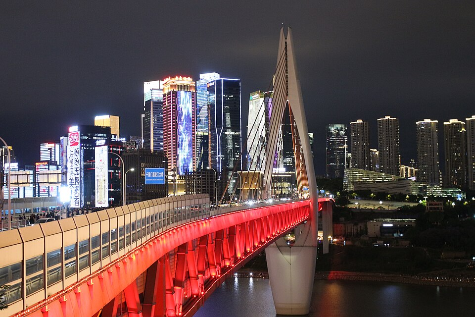

★ 兩篇以上攻略或官方都提到；單一來源 只有一篇。 大眾點評、小紅書、知乎擋爬蟲，人均多半未查到；有寫的是攜程或去哪兒的數字（2026/11 查）。點菜記得說「微辣」。
🌃 洪崖洞夜景
目標
① 千廝門大橋人行道：俯拍洪崖洞全景的機位 ★ ② 樓內從 11 樓逐層往下逛，全程下坡 單一來源（另一篇只有搜尋摘要）。11 樓滄白路進、11 樓滄白路出：樓內走到 1 樓，搭樓內電梯回 11 樓，最後上橋，再走回橋頭回解放碑。
路線（19:45～21:00，步行共約 1.8 km、約 22 分）
- 起19:45 11 樓滄白路入口：晚餐後從臨江支路走過來。亮燈時間是 19:30（2026-04 起的資料），19:45 到的時候應該已經亮了（研判，12 月的時間未查到）
- 樓層順序（樓內）：11 樓城市陽台 → 逐層往下逛民俗街巷 → 5 樓「重逢 1980」（自願付費）→ 4 樓美食區 → 1 樓 單一來源。5 樓「內城」沉浸式展館收費 29 或 39 元，其餘免費（摘要）單一來源。樓內沒有合格照片
- 120:20 1 樓嘉濱路（濱江路）：出來回頭看整棟亮燈，拍全景 單一來源；這裡人多 單一來源（地圖上這段是 OSRM 的戶外路徑約 4 分，實際是樓內往下走）

DvTor8303・CC0・Wikimedia Commons（2025-10） - 220:30 11 樓城市陽台：搭樓內電梯回 11 樓（11 樓與 1 樓以內部電梯、樓梯相連）；看嘉陵江與千廝門大橋（地圖上這段約 4 分，實際搭電梯）
- 320:40 千廝門大橋人行道 ★：走上橋，回頭俯看洪崖洞全景（步行約 7 分）。OSM 註記西側人行道 2025-09 起封閉 單一來源，官方公告未查到，到現場看哪一側能走

Suicasmo・CC0・Wikimedia Commons（2026-05，橋面人行道） - 終21:00 11 樓滄白路入口：走回橋頭（步行約 7 分），接著步行回飯店（洪崖洞 → 飯店約 22 分，高德）
時刻是估算（步行用 OSRM 距離 ÷ 80 m／分，停留時間自己分配）；座標取自 OpenStreetMap。
時間
- 亮燈有兩說：19:30–23:00（2026-04-15 起，洪崖洞公眾號，光明網轉述）、20:00–23:00（本地寶）；春節假期是 18:00 起（光明網 2026-02），會隨季節、節日變，12 月的時間未查到。22:30 停止入場是二手資料，未證實
- 停留：快逛 1.5～2 小時、慢逛 3～5 小時（摘要）單一來源；這裡只排 75 分，樓內以 11 → 4 樓為主
- 節假日千廝門大橋會封橋改成行人通道（2025 國慶，摘要）；12/9 是平日
實用
- 景區免費；黃牛的「快速通道」「內部票」是騙局 ★
- 預約有兩說：平日刷身份證入園（攜程筆記 2026-10）、要提前一天在官方小程序預約（新浪 2026-07，摘要）；台胞證能不能刷未查到
- 叫車不要定位 1 樓（晚上塞，又要爬坡）單一來源（另一篇只有搜尋摘要）
- 廁所：1、3、5、7、11 樓，免費 單一來源；寄物：未查到
- 千廝門大橋旁「城市陽台—洪崖洞側」6 層扶梯（上接滄白路、橋面，下接嘉濱路）2026-03 時還在施工，有沒有啟用未查到
- 小什字站出口說法不一（5A／6／9 號口），用高德確認
吃的、文創
- 順路（4 樓）：佬麻抄手（4 層百子巷，¥29，08:30–21:30）單一來源（商業推廣文）；景區裡被兩篇以上近五年攻略推薦的店未查到，價格比外面貴（低可信）單一來源
- 不順路：八一好吃街（11 樓步行可到；涼蝦、小麵、腦花，單人不到 50 元）★
- 伴手禮店：未查到
來源：攜程洪崖洞、川觀 2026-04、本地寶 2026-07、攜程遊記 2025-02、光明網 2026-03（扶梯工程）、光明網 2026-04（亮燈）。筆記：1209_洪崖洞鵝嶺攻略、1209_洪崖洞_園內路線